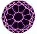

C60
Molecule (insert graphic of buckyball) The third known form of carbon
-- graphite, diamond, buckyball. Fullerene "buckyball" - carbon
cluster of 60 atoms with truncated icosahedron symmetry. Theoretically predicted
by Osawa (1970), discovered by Kroto/Smalley research team (1985, produced
by Huffman/Kratschmer research tems (1973-1989), and first imaged with atomic
resolution by Koruga/Hameroff research team (Jovana Simic-Krstic, Mirko
Trifunovic, 1992).
-Fullerene C60